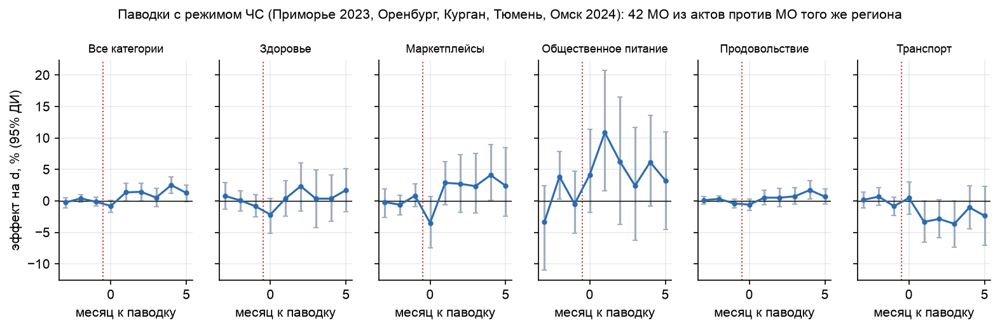

Конкурс СберИндекса 2026 · трек «Прогнозирование»
Прогноз безналичных расходов муниципалитетов и поиск структурных сдвигов
12 096 рядов (2016 МО × 6 категорий), 24 месяца. Горизонты 1, 3, 6, 12 месяцев. Проверка на отложенном окне 2024-07..12 и на факте 2025 года.
1. Методология за минуту
Расходы МО = общий ритм страны × отклонение города. Ритм страны (сезон и инфляция) оцениваем по 2016 МО сразу, а не по 24 точкам одного ряда; годовой рост берём из Росстата. Отклонение города прогнозируют фундаментальные модели, GBM и классика; 35 моделей объединяет ансамбль с весами, выбранными только на validation. Детекторы сдвигов, новости и реестр ЧС следят за тем, где ряд сломался.


Один раз test использован в дизайне (правило (k, w) для h ≤ 3, записано в LOG.md). Пост-hoc эксперименты — в приложении А отчёта, в заголовок не входят.
2. Сравнение моделей (test, MAE, руб. на жителя в месяц)
| h | Prophet | Ансамбль | Снижение | 95% ДИ разницы | Значимо | R² изм. | Ранг на test | «Все категории» |
|---|---|---|---|---|---|---|---|---|
| 1 | 563 | 306 | −46% | [−511; −37] | да | 0.42 | 10 из 36 | 837 / 1792 |
| 3 | 574 | 435 | −24% | [−302; +16] | нет | 0.59 | 2 из 36 | 1147 / 1772 |
| 6 | 652 | 446 | −32% | [−353; −66] | да | 0.53 | 1 из 36 | 1181 / 2057 |
| 12 | 1361 | 658 | −52% | [−1110; −430] | да | −0.17 | 1 из 36 | 1695 / 4060 |
95% ДИ — двусторонний бутстреп (МО × месяц цели). Значимо на h = 1, 6, 12; на h = 3 ансамбль лучше в 5 из 6 месяцев, но ДИ включает 0. «Все категории»: ансамбль / Prophet.
Как выбрана модель (validation) и что получилось на test
| h | Лучшая одиночная, val | Ансамбль, val* | Ансамбль, test | Лучшая на test (после) |
|---|---|---|---|---|
| 1 | 400 (TimesFM 2.5 (декомп.)) | 301 | 306 | 296 (TimesFM 2.5 (декомп.)) |
| 3 | 569 (Theta) | 369 | 435 | 420 (LightGBM v1) |
| 6 | 540 (TimesFM 2.5 (декомп.)) | 484 | 446 | 493 (TimesFM 2.5 (декомп.)) |
| 12 | 993 (GBM база) | 800 | 658 | 691 (Декомпозиция) |
* на окне подбора весов, оптимистично.
Prophet не соломенное чучело: 10 конфигураций, 400 МО
| h | Prophet, наша конфигурация | Лучшая из 10 (выбор по test) | Какая | Ансамбль | Ансамбль − лучший, 95% ДИ |
|---|---|---|---|---|---|
| 1 | 558 | 452 | Фурье 5 | 305 | −148 [−228; −72] |
| 3 | 569 | 485 | Фурье 5 | 430 | −55 [−122; +8] |
| 6 | 647 | 575 | Фурье 5 | 432 | −143 [−176; −111] |
| 12 | 1316 | 1049 | по умолчанию | 637 | −412 [−551; −244] |


3. Фундаментальные модели
8 вариантов 5 семейств (Apache-2.0). На сырых уровнях zero-shot при h ≥ 3 хуже Prophet и на уровне наивной модели: 24 точки, нет календаря. На отклонении города те же модели снижают MAE в 1.5-3 раза; в ансамбле FM дают −6% на h = 6, на h = 12 экстраполируют локальный тренд и проигрывают persistence.

4. Структурные сдвиги
Все детекторы откалиброваны на одну частоту ложных тревог (≈2%). Выбор для мониторинга — BOCPD с подтверждением (лучший F1, выбросы вдвое реже BOCPD). На реальных событиях стабильно выше базовой частоты только CUSUM — он для проверки гипотез по новостям и реестру ЧС.
| Детектор | F1 сдвиг 10% | Задержка, мес. | Тревога на выбросе | Орск | Lift GDELT | Lift паводки |
|---|---|---|---|---|---|---|
| BOCPD-подтв. | 0.82 | 1.2 | 0.54 | нет | 0.6 | 0.0 |
| BOCPD | 0.78 | 0.3 | 0.90 | нет | 0.0 | 0.0 |
| PELT | 0.76 | 0.7 | 0.74 | нет | 0.4 | 0.0 |
| Window | 0.77 | 1.6 | 0.56 | нет | 0.9 | 1.8 |
| CUSUM | 0.40 | 1.4 | 0.21 | 2024-06 | 1.5 | 2.3 |
| CUSUM + новости | 0.43* | 1.1 | — | 2024-05 | 1.5 | 2.3 |
* полусинтетика с новостями. Lift = доля событий с тревогой в 0..2 мес. / базовая частота.


5. Новости и реестр ЧС
GDELT GKG: 1,55 млн документов о местах РФ, привязка к МО (30 км + название). Реестр 71 события из официальных источников (постановления о ЧС, Банк России) с датами объявления и вступления. Правило as-of: в момент прогноза только документы и акты с датой до конца месяца origin.

Event study паводков: 42 МО из актов о ЧС против МО того же региона
| Категория | Эффект 0..2 мес. | 95% ДИ | p (Холм) |
|---|---|---|---|
| Все категории | +0.7% | [−0.5; +1.7] | 1.00 |
| Здоровье | +0.2% | [−2.7; +2.9] | 1.00 |
| Маркетплейсы | +0.7% | [−2.6; +4.2] | 1.00 |
| Общественное питание | +7.1% | [−0.8; +15.3] | 0.55 |
| Продовольствие | +0.1% | [−0.9; +1.2] | 1.00 |
| Транспорт | −1.9% | [−4.3; +0.5] | 0.63 |
Результат нулевой: среднего эффекта нет ни в одной категории после поправки Холма; плацебо-даты дают такие же эффекты. Орск (+7%) — отдельный случай.

6. Метрики
| Метрика | Ансамбль h=1/3/6/12 | Prophet h=1/3/6/12 | Смысл |
|---|---|---|---|
| MAE, руб. | 306 / 435 / 446 / 658 | 563 / 574 / 652 / 1361 | средняя ошибка (обязательная) |
| R² (уровни) | 0.998 / 0.996 / 0.995 / 0.991 | 0.991 / 0.992 / 0.990 / 0.954 | ≈ 1 у всех: уровни МО разные |
| R² на изменении | 0.42 / 0.59 / 0.53 / −0.17 | −2.6 / −0.9 / −8.4 / −167.2 | объясняет ли модель динамику |
| WAPE | 3.3% / 4.7% / 4.9% / 7.2% | 6.1% / 6.3% / 7.1% / 14.8% | % от суммы факта |
| Смещение | +0.7% / +1.2% / −0.4% / +0.3% | −0.6% / −0.5% / −1.6% / +6.8% | систематический сдвиг |
| Покрытие 80% | 0.81 / 0.74 / 0.67 / 0.76 | 0.87 / 0.90 / 0.87 / 0.93 | цель 0.80 |
| WIS, руб. | 211 / 302 / 333 / 516 | 485 / 448 / 503 / 1205 | интервал + медиана |
7. Выводы, проверка 2025, воспроизводимость
Прогноз 2025, сделанный в конце 2024 г.: рост «Всех категорий» 0.135 (лог.) против факта портала СберИндекса 0.132.


- Главное — отделить общую динамику страны; годовому горизонту нужен внешний источник роста.
- FM применять к очищенному от сезона сигналу, а не к сырым коротким рядам.
- Режим ЧС сам по себе не предсказывает сдвиг расходов; нужен масштаб ущерба.
make setup data quick— со свежего клона за 2 минуты пересчитывает все главные числа;make reproduce— полный прогон.
Данные организатора в репозиторий не входят (Положение §9.2.2).